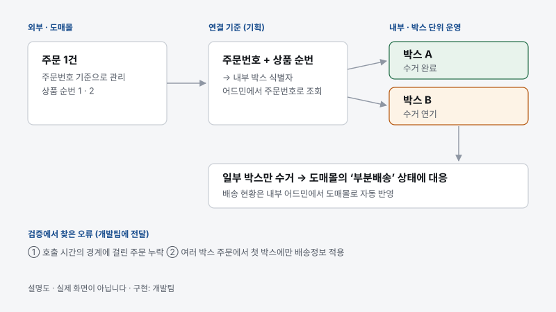
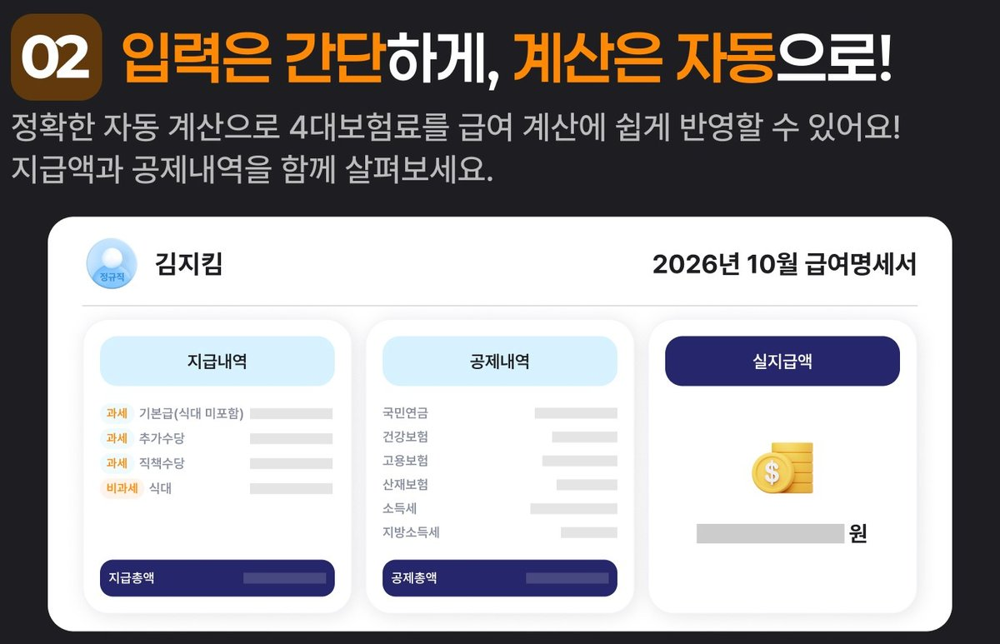
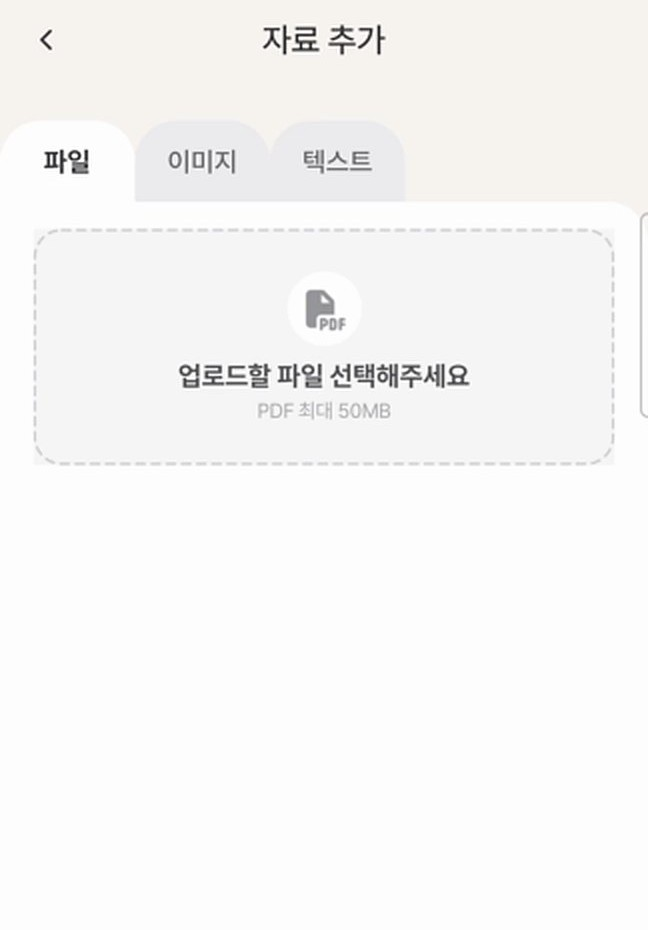
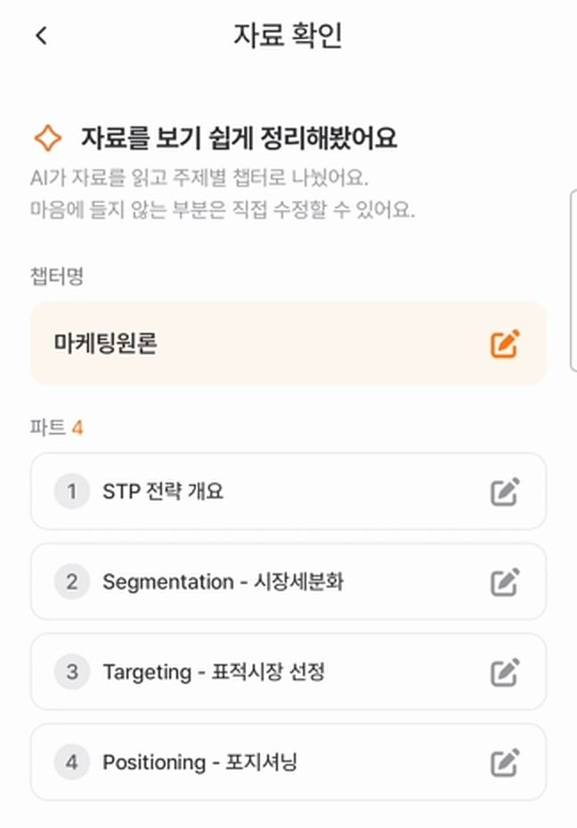
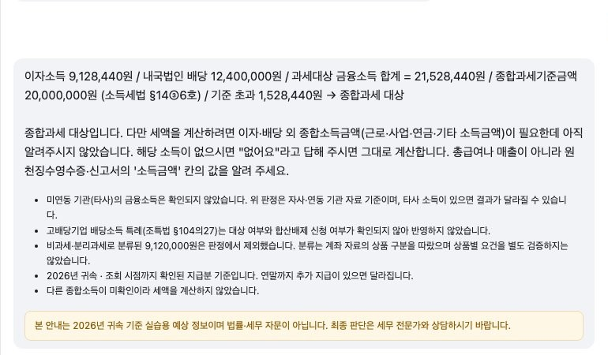

장인우서비스 기획 · IT 기획 · AX
현장에서 발견한 문제를
사용자 흐름과 기능으로 설계하는 기획자
현업의 업무와 사용자의 불편을 살펴 화면·기능·운영 기준을 정합니다. 실무에서는 개발팀과 구현을 조율했고, 교육과 개인 프로젝트에서는 AI 코딩 도구를 활용해 직접 구현하며 결과를 확인하고 있습니다.
대표 프로젝트
-

설명도 · 직접 작성의약품 도매몰 주문·박스 상태 연동
판단 외부 주문·상품과 내부 박스의 처리 단위가 달라, 주문번호와 상품 순번으로 처리 대상을 식별해 박스와 연결하고 부분 수거·수거 연기 기준을 정했습니다.
결과 해당 수기 입력 하루 약 1시간 → 10분(본인 확인 기록). 구현 후 양쪽 데이터를 대조해 오류 2건을 QA로 전달했습니다.
연동 정책·데이터 대조·QA: 본인 · 구현: 개발팀
-

회사 공개 소개 이미지 · 예시 데이터급여명세서 서비스 기획
판단 급여 유형별 계산 기준과 예외를 정리하고, 세무 프로그램 결과와 대조해 기준 코드로 개발팀에 전달했습니다.
결과 내부 실제 급여 계산에 사용 · 고객 시범 운영 단계에서 퇴사
기획·기준 검증: 본인 · 구현: 개발팀
-


시연 영상 화면 일부 · 팀 결과물퀴켓 — AI 퀴즈 학습 앱
판단 첫 출시 범위를 조율하고, 사용자 테스트 의견을 반영해 과목명 입력 → 자료 업로드 → AI가 나눈 챕터·파트 확인·수정 흐름으로 바꿨습니다.
결과 App Store·Google Play 출시(팀 결과) · 바뀐 흐름은 내부 QA로 확인 · 현재 서버 운영 중단
PM·기획·사용자 테스트: 본인 · 정식 앱 구현: 개발팀
-

실제 화면 일부 · 합성 데이터TaxDesk — 금융소득 세무상담
판단 서버가 소득 조회·과세 판정·계산 순서를 제어하고, 모델은 질문 분류와 답변 설명에만 썼습니다. 확인되지 않은 소득은 계산하지 않고 되묻습니다.
결과 8월 실패 사례(0원 가정 세액)를 고친 뒤 같은 위험 조건에서 되묻기 확인 · 세무 전문가 검토 전 데모
1인 설계 · AI 코딩 도구를 활용한 구현·검증
전체 프로젝트
카드로 보기- 실무 · 2026.01–02의약품 도매몰 주문·박스 상태 연동연동 정책·데이터 대조·QA · 구현 개발팀운영 적용
- 실무 · 2025.12–2026.05급여명세서 서비스 기획계산 기준·정책·데이터 필드·화면 기획 · 구현 개발팀내부 사용 · 시범 운영
- 실무 · 2026.01–06약국 AI 세무 상담 — 삼일회계법인 협업화면·서비스 정책 · 모델 협력사베타 테스트 단계
- 실무 · 2024.10–2026.06 중약국가계부 연결 흐름 개선 · 제휴 사이트 연동연결 흐름·예외 기획운영 적용
- 실무 · 2024.10–2026.06 중처방전 보관 서비스 운영 · 스캔센터운영 자동화 기획 · 구현 개발팀현장 운영
- 실무 · 2025.01–03종합소득세 예측 기획홈택스 API 응답 매핑·계산 흐름 기획 · 구현 개발팀운영 적용 · 홍보용
- 실무 · 2025–2026.06거래처 관리 개선 · 수임계약 자동화기획·ERD 검토, 디자인 반영까지기획 · 디자인
- 교육·개인 · 2026.08TaxDesk — 금융소득 세무상담1인 설계 · AI 코딩 도구로 구현·검증교육 실습
- 교육 · 2026.09차량용 교통표지판 인식 모델 경량화경량화 방향 선택교육 과제
- 교육 · 2026.08EDU:UP — 교육복지포인트 플랫폼프론트엔드 · 서버·추천 모델 팀원교육 실습
- 교육 · 2026.09관계부 — 기능·화면·ERD·API 설계1인 설계 + 프론트엔드 프로토타입(목업 API)교육 · 프로토타입
- SKALA · 2026.11–진행 중표시광고 AI 사전검토 서비스(가칭)프론트엔드 · AI OCR · 진행 중으로 세부사항 비공개출품 준비 중
- 팀 · 2026.03–07퀴켓 — AI 퀴즈 학습 앱PM·기획·사용자 테스트 · 구현 개발팀출시 후 운영 중단
- 팀 · 2026.05–06에이링크 — AI 링크·QR 북마크기획 전반 + 프론트엔드 프로토타입 · 서버 팀원웹 · iOS 출시
- 팀 · 2026.08–09데이콘 블랙박스 대회 — 재촬영 판별 실험 · 라벨링 도구Stage 1 실험 · 서버 팀원대회 종료
- 개인 · 2026.11–진행 중POSSESSED — The Agent Overreach Lab기획·설계 · 풀스택 개발 · AI 엔지니어링Kiroween 출품 준비 중
- 개인 · 2026.06 시작마켓데스크 — AI 리포트 분석·종목 관리1인 기획·AI 활용 구현·화면 검증개발 완료 · 개인 사용 중
- 개인 · 2026.06일경험 운영 트리아지 어드민6시간 안에 기획·데모 구현·발표데모
- 개인 · 2026.08ClassTrack — 강의·과제 추적 웹앱1인 설계·구현·배포 실습배포 실습
- 개인 · 2026템플릿 허브 — 문서 디자인 프롬프트 모음1인 제작(AI 코딩 도구 활용)공개 중
- 개인 · 2026바이브코딩 가이드1인 제작(AI 코딩 도구 활용)공개 중
- 개인 · 2026개인용 툴 — 기타1인 제작(AI 코딩 도구 활용)개인 사용
일하는 방식
How I Work 전체 읽기기획
업무를 직접 해 보고 문제를 찾습니다. 기장 30곳, 원격지원, 담당자 관찰에서 시작한 기획이 많습니다.
02개발
스펙을 태스크 6항목으로 먼저 정하고, AI 코딩 도구로 구현한 뒤 화면과 테스트로 확인합니다.
03협업
디자이너·개발자·현업마다 필요한 정보로 넘기고, 실제로 쓰일 때까지 확인합니다.
“구현 중에 판단해야 할 것들이 문서에 정리되어 있어 편하다.”
지킴컴퍼니에서 함께 일한 개발자와 디자이너
Dev Notes
전체 노트- 2026.09.11
왜 AI 서비스를 만들까? — 사용자의 어떤 일을 바꾸려는가
‘AI로 답을 만들 수 있다’는 도입 이유가 되지 못한다. 사용자의 어떤 작업을 개선할지, AI 없이도 풀리는지, 틀렸을 때 사용자가 어떻게 알아채고 바로잡을 수 있는지 흐름까지 함께 설계해야 한다고 생각한다.
- 2026.11.06
IDE 툴 비교 — VS Code · Kiro · Cursor
VS Code는 조합형, Kiro는 명세 중심, Cursor는 에이전트 중심. AI 코딩 방식, 프로젝트 규칙 관리, 작업 계획·검증 흐름을 공식 문서 기준으로 비교했다.
- 2026.08.28
앱에서 Claude Code를 호출하면 내 설정도 따라올까?
로컬에서 CLI를 호출하면 개인 설정과 지침이 적용될 수 있다. 설정을 제외하는 법과 도구를 끄는 법을 알아보고, 답변을 생성되는 대로 화면에 보여주는 스트리밍 처리도 살펴봤다.
- 2026.07.15
프롬프트 기법 10가지 — 언제 무엇을 꺼내 쓸까
원하는 결과가 무엇인지 먼저 정해야 프롬프트 기법도 고를 수 있다고 생각한다. 요청은 RICE로 구체화하고, 출력 형식이 중요하면 예시를 주고 전제를 점검할 때는 Step-back을 쓰는 식으로 목적에 맞게 선택한다.
AI 도입과 기술 선택을 위한 기획 기준부터 구현·검증 과정까지 기록합니다.
함께 일하면
일할 때는 세심하게, 예상과 다른 결과 앞에서는 유연하게, 평소에는 무던하게.
별명은 ‘따뜻한 로봇’입니다. 논리적으로 생각하고 일하면서도, 함께하는 사람의 상황을 살핀다는 뜻입니다.
새로운 기회를 기다립니다
서비스 기획 · IT 기획 · AX 직무로 연락 주시면 빠르게 답장드리겠습니다.